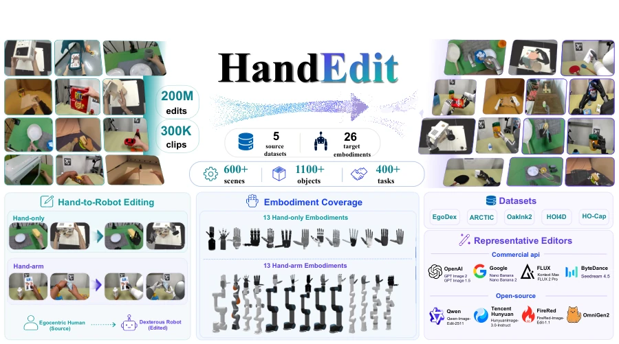
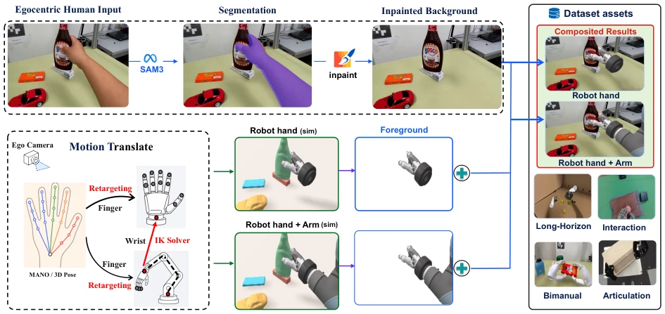
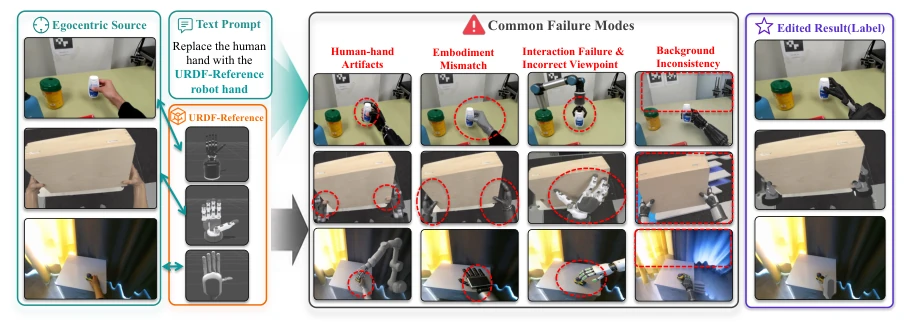

This paper constructs a 200-million-scale large dataset, transforming human hand videos into robot hands via heavy modification, which sounds very appealing. HandEdit indeed fills the gap of "human-robot visual gap" in embodied intelligence, after all, real robot data is too expensive, and human videos are too human-like. But to be honest, can this kind of "pseudo-GT" really be used directly to train policies? After all, there is still a gap between rendered robot hands and real physical contact, especially in force feedback and contact details. Evaluation metrics are quite comprehensive, even including VLM, but commercial APIs like GPT-Image-2 dominate the leaderboard, while open-source models are in a pitiful state, indicating that this task is actually quite difficult. However, as a Benchmark, it at least provides a unified standard for "hand editing", otherwise everyone is still reinventing the wheel behind closed doors. As for disadvantages, the data generation process relies on massive manual screening and rendering, costs are not low, and URDF conditional editing poses huge challenges to existing models. Currently, it looks more like "visual deception" rather than "physical understanding", still far from true embodied policy learning.
The core of embodied intelligence is dexterous manipulation, but collecting high-quality robot data is extremely costly, relying on specific hardware and teleoperation [1][2]. Although UMI-style data improves scalability, it still requires dedicated equipment [8][9]. In contrast, first-person human videos are abundant and easy to obtain [14][15], but there are huge differences between human and robot hands in appearance, kinematics, and viewpoint (embodiment gap). Directly utilizing human videos presents challenges [22][23]. Existing methods such as H2R [26], Phantom [28], etc., attempt to convert human videos to robot viewpoints, but mostly target specific manipulators or parallel grippers, lacking systematic research on dexterous hands. More importantly, there is a lack of large-scale datasets supporting URDF conditional editing and unified evaluation protocols. HandEdit aims to solve this pain point, bridging the human-robot visual gap through image editing, providing scalable data for policy pre-training, and promoting the shift of embodied AI from specific hardware to general data-driven approaches.

Figure 1. HandEdit is an embodiment-aware image-editing dataset and benchmark for editing egocentric images of human hand and arm manipulation into diverse dexterous robotic embodiments.
The overall process is divided into two parts: data construction and evaluation benchmark. The data construction Pipeline starts with human operation clips from 5 public datasets (EgoDex, ARCTIC, etc.). First, human hands are segmented using SAM3, and the background is inpainted using ProPainter. The key step is Retargeting: mapping MANO or 3D hand poses to the joint states of the target URDF, considering kinematic constraints and contact geometry. For hand-arm systems, virtual base search and Inverse Kinematics (IK) feasibility checks are also required. After the rendered robot foreground is composited with the background, appearance harmonization (lighting, color consistency) is performed via Harmonizer. This module is self-supervised trained on 10,000 natural images to ensure visual coherence of synthesized images. After generating pseudo-GT, the evaluation includes two tracks: Hand-only and Hand-Arm. The metric system is divided into three layers: General similarity (PSNR, LPIPS, etc.) measures low-level reconstruction; VLM semantic judgment (SC, PQ) evaluates task semantics; Embodied perception metrics (human hand removal rate, structural fidelity, ID consistency, interaction consistency) focus on geometric and physical constraints. This ensures that not only does the image look like it, but it also conforms to robot physical constraints, making up for the defect of traditional editing benchmarks ignoring embodied attributes.

Figure 2. Data Curation Pipeline. For the egocentric hand-object clips, HandEdit removes the human hand, recovers the occluded background, retargets the source interaction to a target URDF, and composites the rendered robot embodiment back into the scene. The composite is then harmonized to produce the final pseudo-GT target.
The dataset contains 200 million image-level editing instances, 300,000 clips, covering 26 types of URDF (13 pure hands, 13 hand-arm). The test set is set with 1K images, 13 target forms. 11 commercial and open-source models were evaluated (such as GPT-Image-2, Nano-Banana, Flux, etc.). Results show that GPT-Image-2 has the strongest overall performance, especially in local editing quality and interaction preservation. Although VLM scores are high, they do not necessarily correspond to physical accuracy; for example, GPT-Image-1.5 has high VLM scores but structural fidelity is not as good as GPT-Image-2. FireRed is visually natural but has a high interaction failure rate. The main challenge lies in embodied perception editing; most models can remove human hands, but there is a large gap in generating correct robot forms and maintaining physical interaction. This reveals that existing general editors lack embodied priors. HandEdit points the direction for future models, while also exposing the shortcomings of current multimodal large models in physical consistency.

Figure 3. Common Failures of Existing Models in URDF-conditioned Hand. Existing image editing models struggle to faithfully replace human hands with the target URDF-specified robot hand while preserving the original scene and interaction. Failures include residual human-hand artifacts, embodiment mismatch, interaction failure, incorrect viewpoint, and background inconsistency.